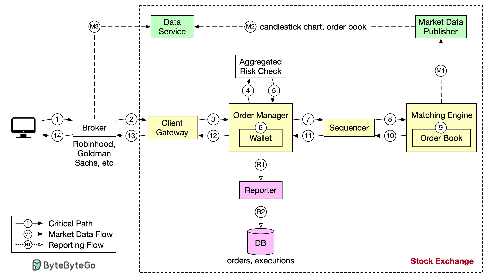

Let’s trace the life of an order through various components in the
diagram to see how the pieces fit together.
First, we follow the order through the trading flow. This is the
critical path with strict latency requirements. Everything has to
happen fast in the flow:
Step 1: A client places an order via the broker’s web or mobile app.
Step 2: The broker sends the order to the exchange.
Step 6: After passing risk checks, the order manager verifies there
are sufficient funds in the wallet for the order.
Step 7 - 9: The order is sent to the matching engine. When a match is
found, the matching engine emits two executions, with one each for the
buy and sell sides. To guarantee that matching results are
deterministic when replayed, both orders and executions are sequenced.
Step 10 - 14: The executions are returned to the client.
Note that the trading flow (steps 1 to 14) is on the critical path,
while the market data flow and reporting flow are not. They have
different latency requirements.